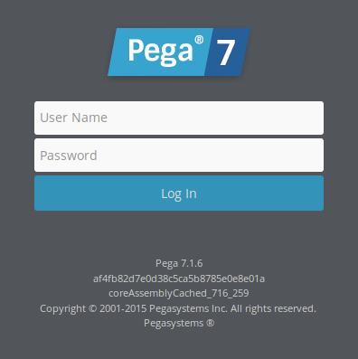
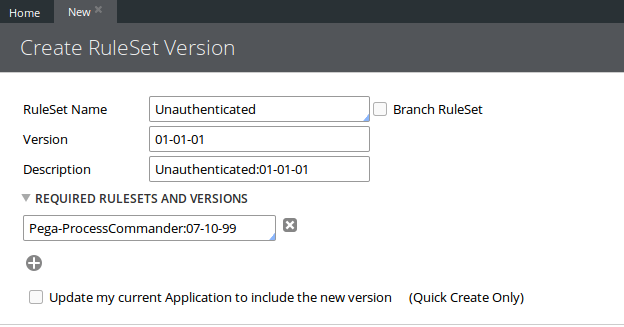
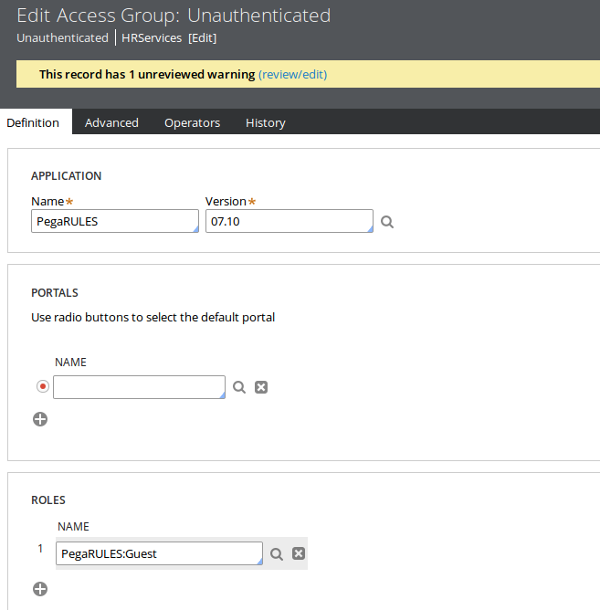
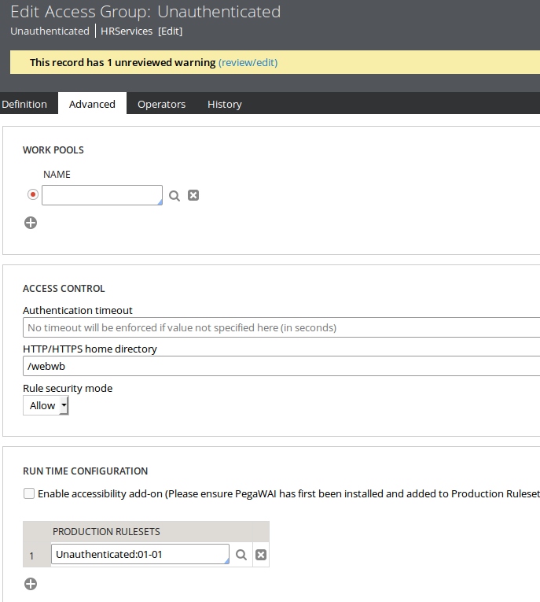
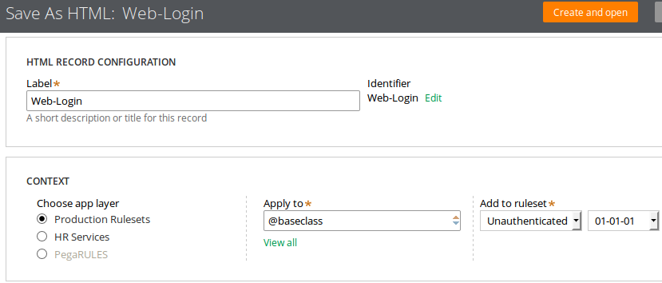
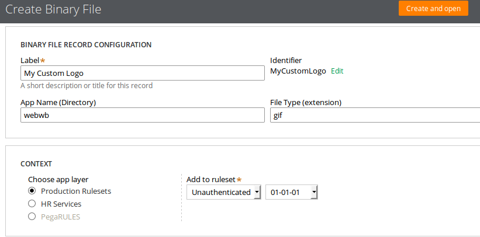
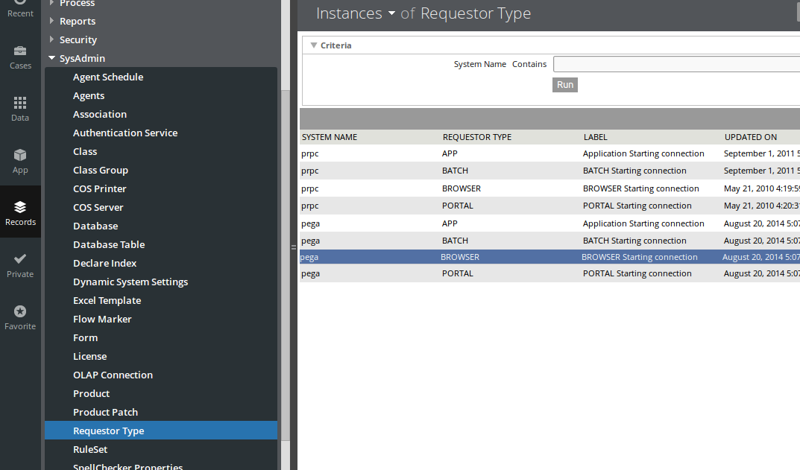
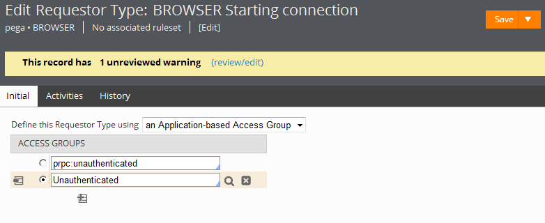
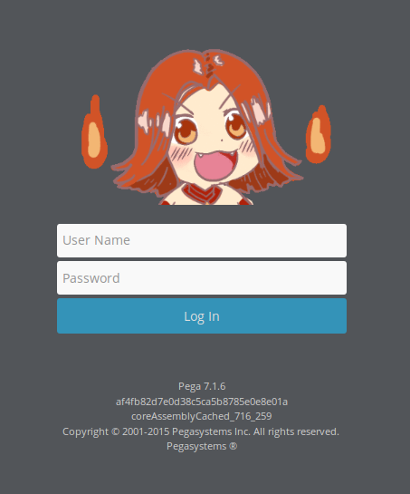

自定义Pega 7登录界面
Pega版本：Pega 7.1.6
前言
Pega 7默认的登录界面是有Pega公司Logo的这个，而有些时候我们却需要自己定义Pega的登录界面。

默认的登录页面是显示给那些启动了PRPC但却还没有登录的访客的，系统默认分配PRPC:Unauthenticated这个access group给这些访客。
要自定义登录界面，我们需要创建一个access group和一个ruleset来保存登录界面，然后配置系统使用我们创建的ruleset和access group来代替系统默认分配给未登录访客的ruleset和access group。
实现方法
新建一个ruleset
创建一个ruleset和一个ruleset版本来存放自定义登录界面的rules。给这个ruleset起一个容易识别的名字，例如：Unauthenticated:01-01-01。

新建一个access group
给未未验证登录的访客创建一个access group


- Application设置为PegaRULES，并设置相应的版本号
- Roles设置为PegaRULES:Guest，即访客的access role
- 把Unauthenticated:01-01作为Production Ruleset设置给这个新的ruleset并把它添加到你自己当前的access group上（这样你才能向这个新ruleset中保存rule）
注意：当你保存这个access group时会出现一个警告说你创建的这个ruleset没有在application中定义，你可以忽略这个警告。
保存rule到新的ruleset中
保存下列标准rule的副本到Unauthenticated:01-01-01这个ruleset中（不要更改rule的名字）
| Rule | 描述 |
|---|---|
| web-login | 这个HTML rule定义了login页面的图片和其他元素 |

新建一个Binary File Rule到Unauthenticated并上传一张图片

在Web-Login中找到
1 | <img src="webwb/desktopimages/pzpega-7-login.gif" alt="Pega 7" /> |
并替换为
1 | <img src="webwb/MyCustomLogo.gif" width="300px" alt="My Custom Logo" /> |
你也可以修改Web-Login中的其他内容来进一步自定义登录界面
更新Requestor Type
Requestor type数据实例定义了可以访问Pega 7的请求者类型，例如：一个浏览器会话，一个外部应用或是一个内部后台进程。当某人试图通过正常方式使用浏览器访问Pega 7的时候就是建立在BROWSER的Requestor Type之上的。
- 在Records Explorer中选择SysAdmin > Requestor Type
- 打开pega BROWSER
 - 添加”Unauthenticated”access group到Access Groups列表中，并选择前面的单选框
 - 保存这个Requestor Type
注意：一定要确保”Unauthenticated”access group前的单选框是选中的状态，如果没有，选中它再保存一次。
登出后就可以看到效果了
